This week covered both 3D and 2D computer-aided design tools — modelling a stopwatch in Fusion 360 and exploring vector, raster, and photo editing software.

Final rendered model of the TimeWinder stopwatch — Fusion 360
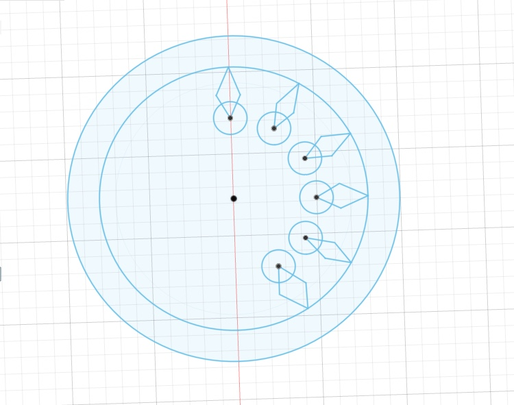
Sketching the Dial
Started by sketching the dials of the stopwatch. Using the shortcut for entering measurements (I) makes it easier to sketch accurately.
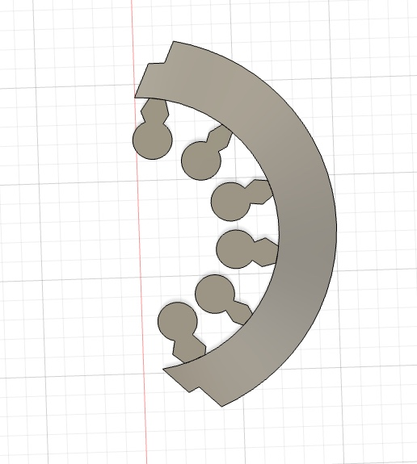
Extruding and Cutting
Extruded the design to a thickness of 0.01mm and sketched a profile to cut away part of the ring, defining the dial shape.
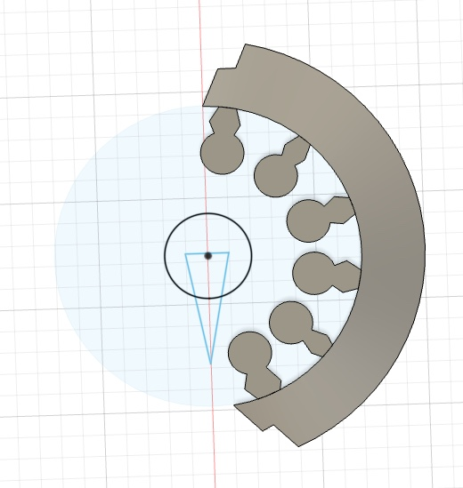
Adding the Needle
Sketched the needle of the stopwatch along with a disc underneath it to create the central hub assembly.
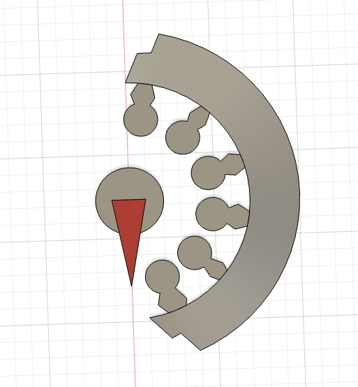
Extruding the Needle Assembly
Extruded the disc at an offset of 1mm and the needle at an offset of 2mm. Thickness for both elements was set at 0.01mm.
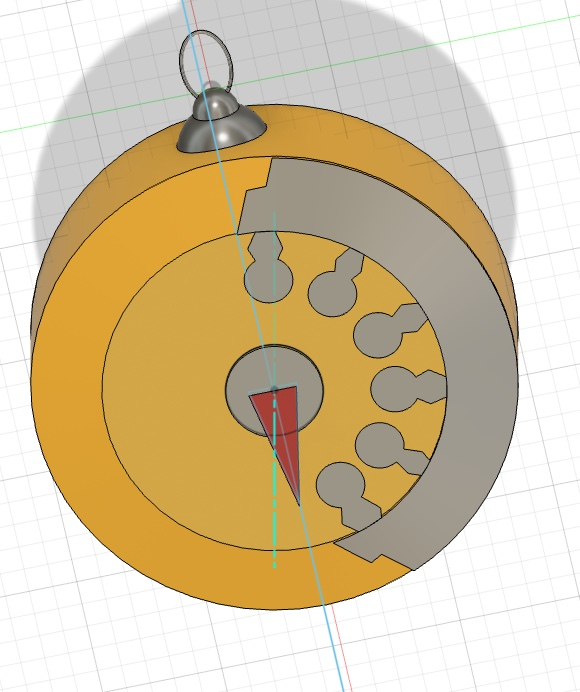
Building the Body
Sketched the body of the stopwatch and extruded it downwards by 30mm. Changed the appearance to yellow metallic paint.
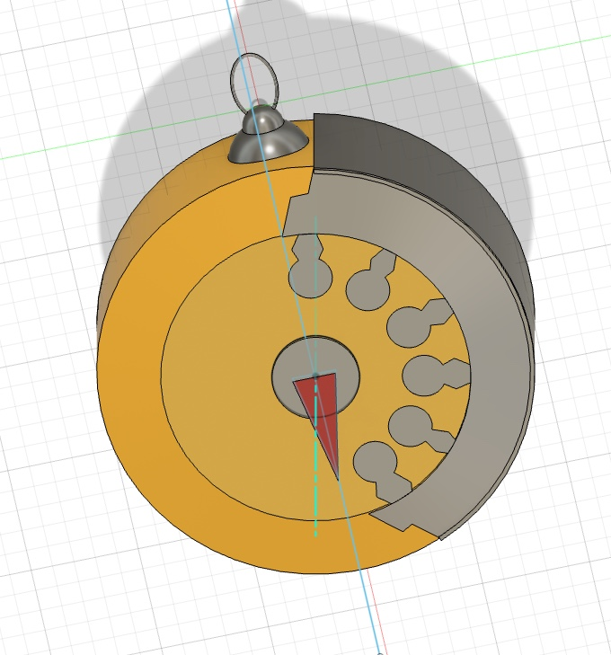
Finishing the Bezel
Selected the outer edge of the watch dial and extruded it downwards at an offset of 1mm with a thickness of 0.01mm to form the bezel.
Interactive 3D Model
Explore the model below
Inkscape
Vector design tool
Imported the Firelights logo and converted it into vector using the Trace Bitmap option. Since this was a colour image, the multicolour option was used and the tool generated vector paths for various shades of colour.
The output was in greyscale — each path was then selected and recoloured in yellow. Since the tool differentiates paths based on colour shades, there are defined boundaries between the colour shades in different paths.
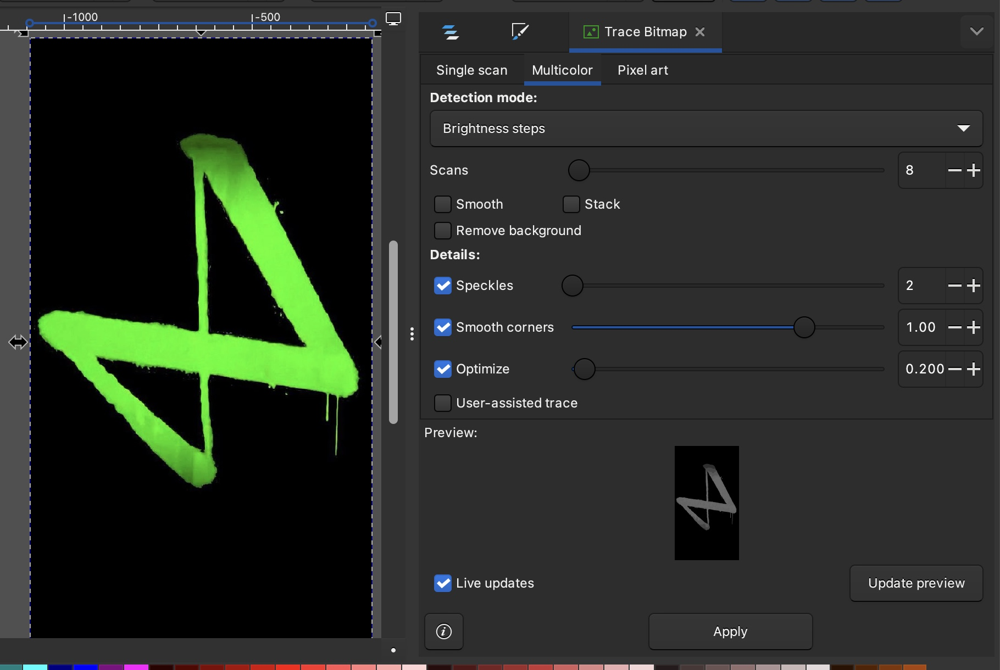
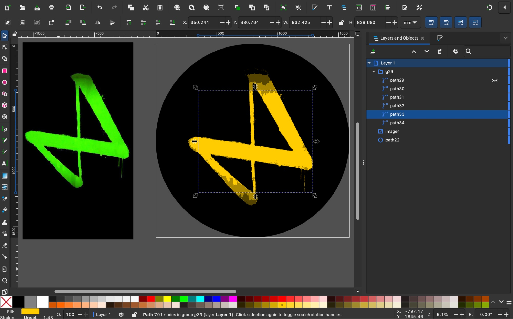
Procreate
Raster illustration tool
Used 4 screenshots to trace the movement pattern of a blue whale. Combined the patterns using the animate option to create an animation of the whale swimming.
Note: Creating each element in a different layer makes it easier to edit them later.
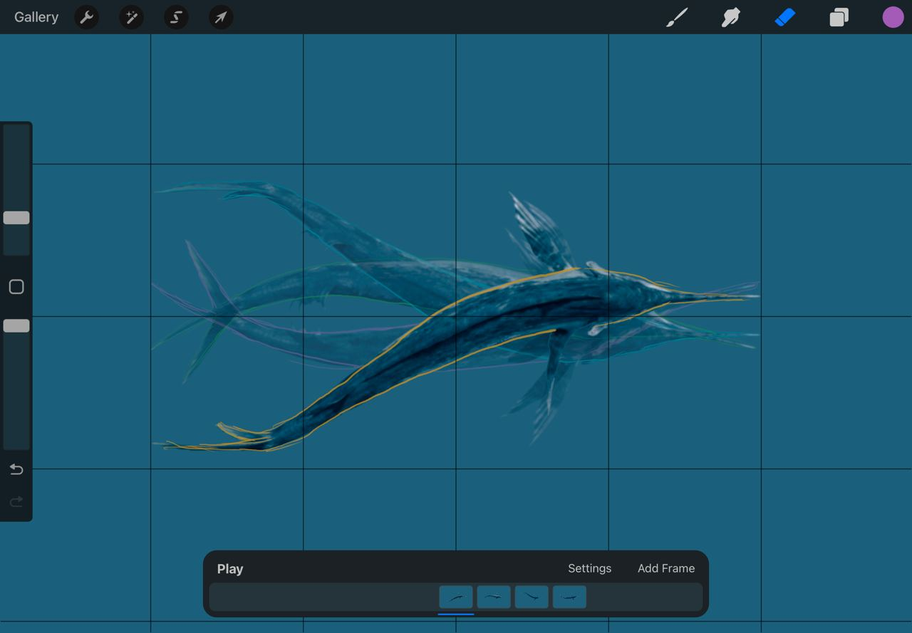
Lightroom
Raster photo editing tool
Used Lightroom to edit the light and colour values of an image, comparing the original and the edited result side by side.
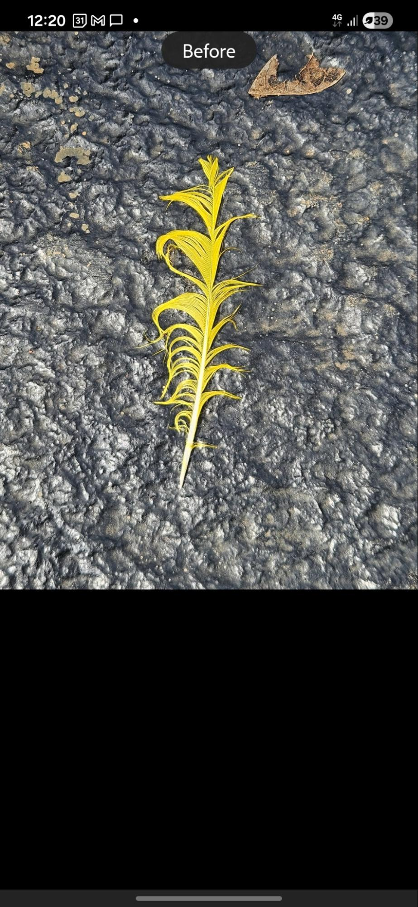
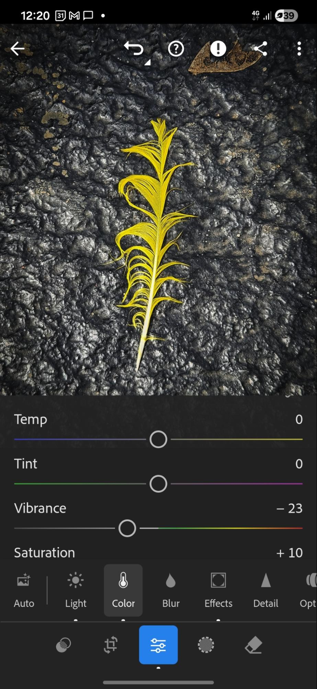